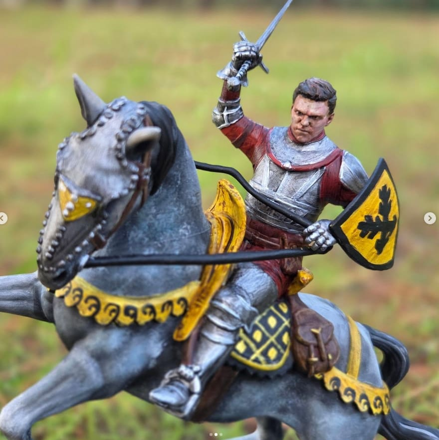
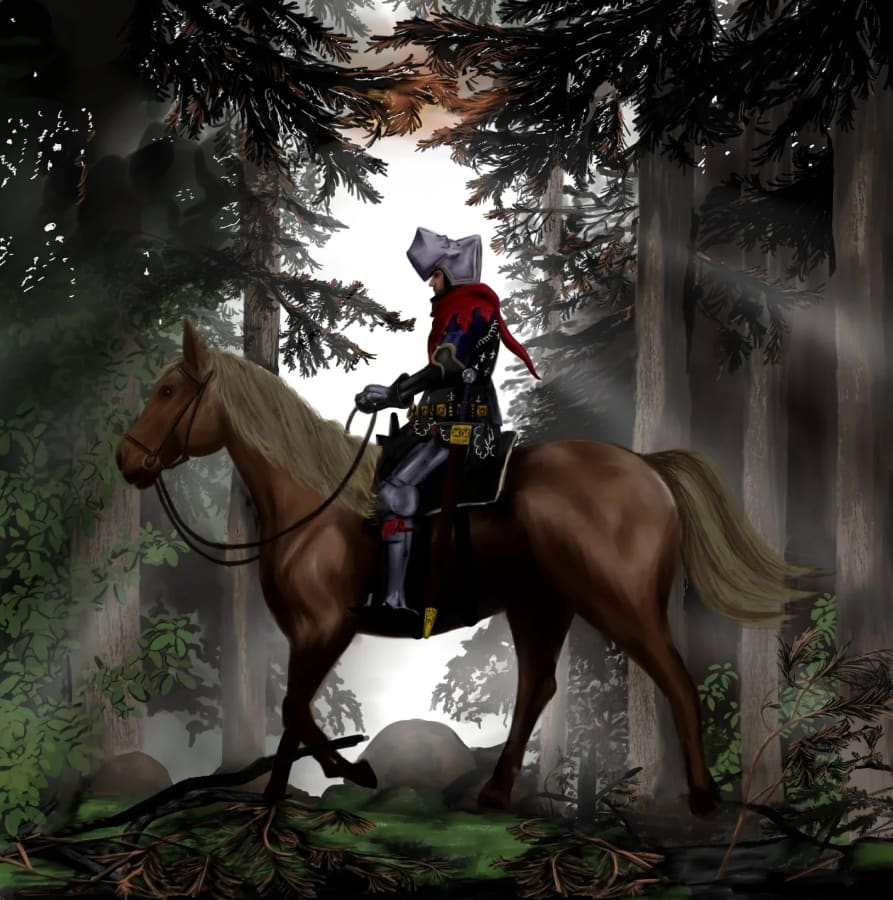

En curso
Leer en AO3
Worth the Wreckage
Todo lo que hago sale de algún sitio: de una partida interminable, de un libro que no sueltas, de una melodía que se queda contigo años después. Esto es un poco de ese origen.

Kingdom Come: Deliverance es, probablemente, la razón por la que JessyIsCrafting existe tal y como es hoy. Descubrí Bohemia, sus bosques, su barro, su luz de atardecer entre los árboles, y algo hizo clic: quería pintar eso, quería dibujar eso, quería tener esos mundos sobre mi mesa de trabajo.
"Un juego que no idealiza la Edad Media, sino que la hace sentir real: polvorienta, dura y, a la vez, profundamente hermosa."
Su dirección de arte —esos castillos desgastados, esas aldeas de madera, esa paleta de verdes, ocres y grises de piedra— está detrás de buena parte de mis cuadros y de mis figuras. Y su banda sonora, con esos coros corales y esos instrumentos medievales, ha sonado de fondo en incontables sesiones de pintura.
Henry, Hans Capon y toda Bohemia se han colado en mi trabajo de mil formas distintas: en una figura pintada, en un boceto digital, en una escena que quería contar con mis propias manos.

Si no estoy pintando, probablemente esté leyendo, o escribiendo. Siempre me ha gustado meterme en los huecos que una historia deja sin contar: qué piensa un personaje secundario, qué pasó entre dos escenas, qué se sintió en un momento que el juego apenas roza.
De ahí nacieron mis fanfics de Kingdom Come: Deliverance: una forma de seguir viviendo en Bohemia un poco más, explorando a sus personajes desde otro ángulo. Si te apetece echar un vistazo, los comparto en Archive of Our Own.
Worth the Wreckage
Something We Cannot Name
The Road to Constantinople